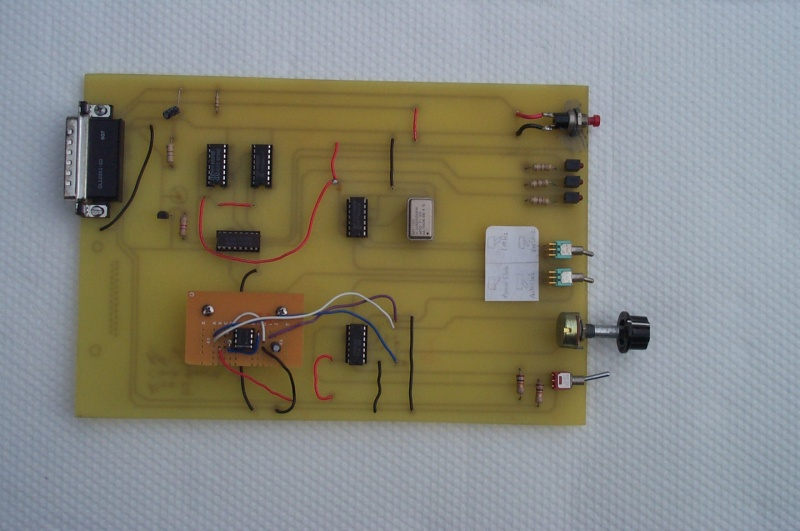
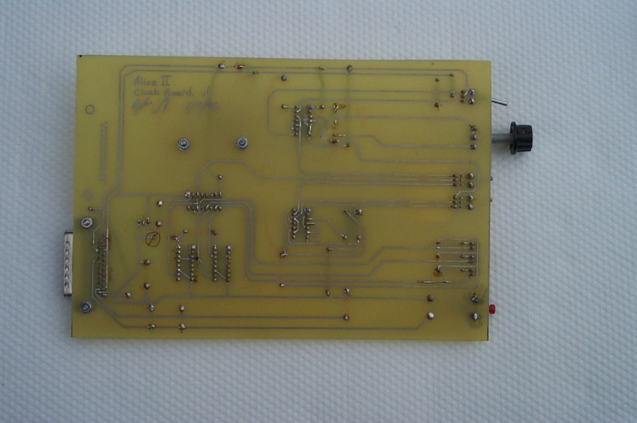

Clock Board
The clock board's responsibility is to put a clock signal on the clock pin of the bus. We wanted control over the clock speed, so we had switches to put the board into one of three states: single-step, variable, and full-speed.
In single-step mode, a push button toggled the clock signal manually. This was useful to debug the memory and CPU boards later.
In variable mode, a potentiometer let us go from about 0.1 Hz to 1 kHz. This was useful if the section we wanted to single-step was far into the program—we'd run the program in this mode until the program got close to the problem section, then go into single-step mode.
Full-speed mode was 1 MHz using an oscillator.
Three LEDs were useful in the above three modes. The first LED showed the actual clock. The second showed the clock divided by 1024, and the third divided by a million.
The card also has a reset button, which just grounds the active-low reset pin of the bus.
The clock board basically worked except for the variable mode. We had taken the design from a magazine that used an RC (resistor-capacitor) circuit. This proved to be unreliable, so we later replaced this with a daughterboard that used a 555 timer chip. The notebook page below shows the design with the RC circuit—we can't find the page with the design of the daugherboard.

When we later developed the CPU and memory boards, we ran into all sorts of problems that we were able to debug easily using the single-step mode and the debug board. It's extremely important to develop good debugging tools early in any project.